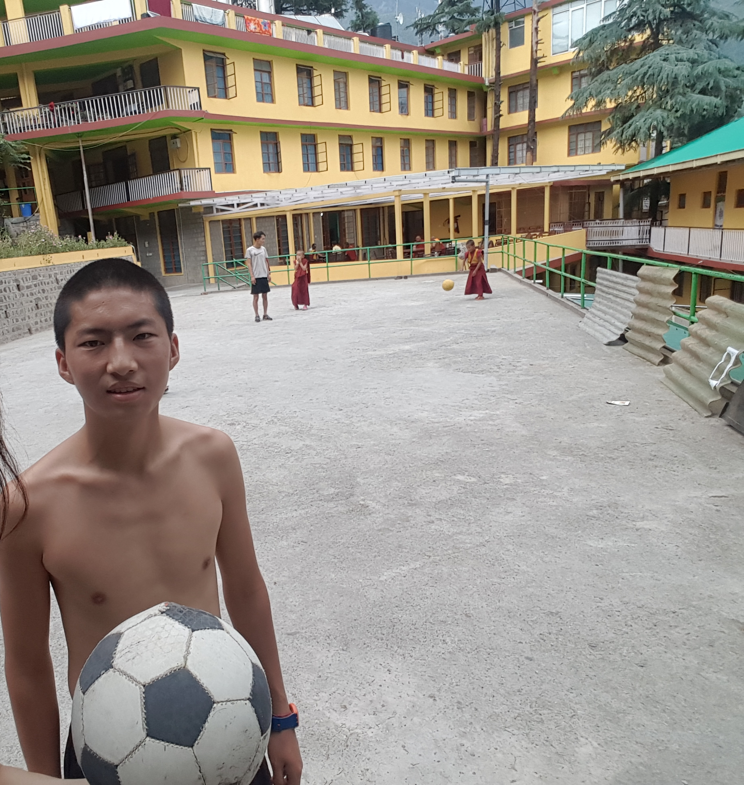
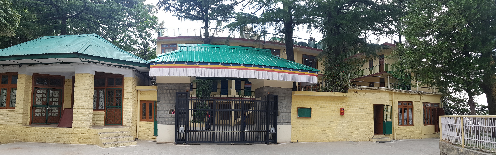
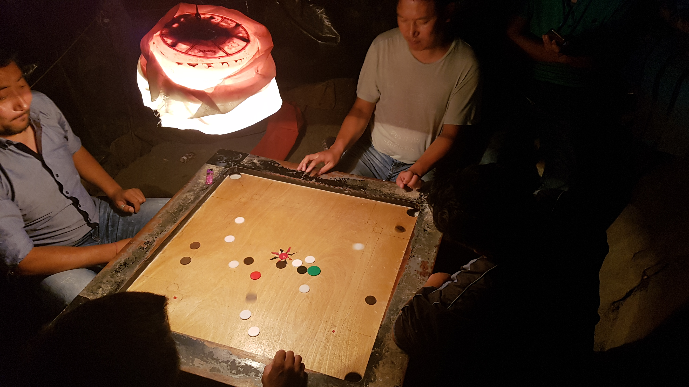

layout: post
title: 내 여행의 두 가지 원칙
subtitle: "인도"
date: 2017-05-18 12:00:10
tags: 포스팅
new: yes
header-img: img/20170518_game.jpg
아직도 여행이 45일 정도밖에 지나지 않았다는게 놀랍다. 40일동안 정말 많은 일들이 있었다. 한 3~4달은 지난것같다. 하루하루가 새롭고 다양한 사건들로 이루어져 있었다. 물론 포카라나 마날리에서 몇일동안은 허송세월 특별한 기억없이 보낸적도 있었다. 물론 그것도 좋지만, 내 스타일의 여행은 아닌것 같다. 이번 여행의 목적 자체가 새로운 환경에 노출되는것 이었기 때문에, 한 장소에 몇주 몇달씩 보내는 스타일의 여행은 적어도 이번 여행은 맞지 않는듯 하다.
여행 기간 통틀어서 거의 10시정도에 자고 5시정도에 깼던것 같다. 특별히 취침시간과 기상시간을 정한것은 아니다. 자연스럽게 졸리면 자고 깨면 일어났다. 이게 진짜 내 생활 패턴일까? 그렇다고 한다면 나는 진짜 아침형 인간이다. 보통 아침일찍 일어나서 아침식사를 하며 어제 밀린 일기를 썼는데 무척 훌륭한 생활 패턴인것 같다. 이런 생활이 만족스럽다. 앞으로 한국에 돌아가 여행자의 삶을 살때 이렇게 살아도 좋을것 같다.
다시 한국에 돌아갔을때 집 없이 베낭을 메고 돌아다니며 사는 생각을 해본다. 가방엔 텐트가 있어서 언제든지 적당한 장소만 있으면 잘 수 있다. 출근은 메인 가방은 어딘가에 맞기고 보조가방만 메고 할 수 있다. 매일매일 새로운 장소에 도착해서 여행한다. 삶의 짐 없이 베낭 하나만 메고 돌아다니며 사는 삶이 왠지 매력적으로 느껴진다. 매일매일이 여행하는 느낌이 들것 같다. 설렌다.
어제 도미토리룸을 구해서 바로 잠에 들어서 같은 방에 있는 사람들이 누구인지 보지 못했다. 아침 식사를 마치고 까페에서 글을 쓰고 책도 읽고 잠시 도미토리 룸에 들어갔다. 맨 구석에 사람이 있어서 인사했다. 이 방에 계속 전기가 들어오지 않아서 그 친구에게 물어봤더니 자기도 못쓰고 있다고 한다. 그렇게 우리는 대화를 시작했다. 이름은 리오이고 벨기에 사람이다. 대학 석서학위를 거의 마치고 빈 기간에 약3주정도 인도에 여행을 왔다고 한다. 모든 여행자들이 거의 짜투리 시간에 여행을 하거나 퇴직을 하고 여행을 한다. 내가 받은 1년 휴직은 정말 세계적인 혜택임을 느꼈다. 아직까지는 모든 복지 국가출신도 내가 1년 휴가를 받았다고 하면 놀란다. 리오라는 이 친구는 참 사람이 괜찮은것 같았다. 내 말도 경쳥해준다. 가끔씩 가볍게 느껴지는 사람이 있는데 나는 그런사람과는 깊은 대화를 하기 어렵다. 하지만 리오는 가볍게 느껴지지 않는 사람이었다. 곧 자원봉사 시간이 와서 우리는 저녁에 다시 대화를 하기로 하고 자리를 떴다. 짧았지만 즐거운 시간이었다.
문득 사람을 정말 많이 만나고 있다는 생각이 들었다. 물론 내가 계속 이동중이라 깊은 관계를 만나기는 어렵다. 하지만 짧게 짧게 사람들을 스쳐만나면서 그들의 스토리를 듣는것이 무척 행복한 일이라는 사실을 깨달았다. 사람들과 각자의 스토리를 공유하는일이 즐겁다. 여행자의 삶을 통해서 그런 즐거움을 얻기 쉽다. 여행자는 다른 여행자나 사람들과 대화를 시작하는것을 두려워하지 않는다. 서로다른 문화와 생각들을 공유받고 공유하면서 성장하기도 하고 또 그차제로 행복감을 느낀다.
첫번째, 가능한 한 가보지 않은 길로 가기.
두번째, 가능한한 여행자들의 발길이 닿지 않은 현지인 속으로 들어가기.
그동안 여행을 통해 만들어진 나만의 두 가지 여행 원칙이다. 특히 SNS에 올릴 사진을 찍기 위한 용도의 여행이 되지 않도록 주의한다. 남들이 정해놓은 계획과 코스를 따르지 않고 내가 스스로 정하는 여행이 즐겁다.
리오와 대화를 마치고 달라이라마 사무실 구경을 맥그로드 간지 마지막 일정으로 잡았다. 내 여행 수칙을 가지고 떠났다. 여행객들이 가는 길이 아닌 바로 옆길로 빠졌다. 티벳 수도승들만 있던 장소였다. 어떤 수도승이 도움이 필요하냐고 묻는다. 나는 달라이 라마 사무실이 어딘지 물어봤다. 저쪽으로 가면 된다고 알려준다. 나는 미소와 함께 고맙다고 했다. 그도 미소를 띄며 좋은 하루 보내라고 한다. 여행자에게 가장 필요한 덕목은 미소인것 같다. 미소는 낫선 여행자를 여행지에 녹아들게 하는 무기다. 어딜 가도 미소하나만 지으면 누구와도 친구가 될수 있다.
한쪽에는 티벳 어린 수도승들이 축구를 하고 있었고 그 뒤에는 샛길이 나 있었다. 여행자들은 가지 않는 길인것처럼 보여서 그 숲길을 따라 걸었다. 어른 수도승이 지나간다. 미소와 함께 나마스떼라고 건네면 그들도 내게 똑같이 인사해준다. 행복하다. 귀여운 원숭이들이 나무에 매달려있다. 새끼원숭이인데 소리가 무척 귀엽다. 이런 원숭이 한마리 키웠으면 좋겠다. 시큐리티가 더이상 들어갈수 없다고 돌아가라고 한다.
나는 다시 축구장으로 돌아왔다. 어떤 한 아이가 같이 플레이 하겠냐고 한다. 나는 신나서 좋다고 했다. 내가 항상 원하던 여행은 이런것이었다. 뻔한 관광지 구경이 아닌 예상하지 못햇던 사건이 일어나고, 이렇게 현지인들속으로 깊숙히 들어가는것 말이다. 15살짜리 티벳수도승인데 축구를 엄청 잘했다. 우리는 약 30분 정도 같이 공을찼다. 가보지 않은 길을 따랐더니 예기치 못했던 즐거움을 만날수 있어서 행복했다.

같이 축구를 했던 운동장과 어린 수도승들. 그중 가장 축구를 잘했던 아이.
나는 그 뒤 달라이라마 사무실로 향했고 그곳은 지금 내가 있던 탬플 한쪽에 위치해 있었다. 문 앞 시큐리티에게 말을 걸어봤다. 생각과는 다르게 내게 무척 친절하게 답변해줬다. 아쉽게도 달라이라마는 지금 출장중이라고 한다. 그 옆에는 리셉션이 있어서 한번 들어가 봤다. 일반인도 신청만 하면 달라이라마를 만날 수 있는데 4번의 사전 인터뷰같은 복잡한 절차가 필요해 보였다. 템플에서 어떤 엄숙함을 느꼈다. 많은사람들이 기도를 하고 예배를 드리고 있었다.

달라이 라마의 사무실
돌아오는 길에 반가운 얼굴을 만났다. 라즈 였다. 우리는 즐겁게 안부를 물어본뒤 같이 저녁을 먹었다. 역시 서로 대화는 별로 없었다. 그도 나도 뭔가 할것들이 있었다. 하늘엔 멋지게 노을이 있었다. 나는 노을을 보러 가겠다고 했다. 라즈는 마지막 까지 내개게 여행자로써 조언을 해줬다. "룩 어라운드, 비 큐리어스"였다. 몇일 동안 라즈와 함께 정말 독특한 경험들을 했고 많은것들을 더 느낄 수 있었다. 우리는 그동안 돈독해졌던 우정을 큰 포옹으로 마무리 했다.
맥그로드 간즈의 마지막 날, 아름다운 노을
숙소에 돌아오는 길에 같이 트리운드 트레킹을 했던 친구들을 만나기로 했다. 캠핑을 위해 구매했던 물품들 비용 정산을 위해서였다. 내일이면 떠나니 나는 오늘 반드시 돈을 줘야했다. 가는길에 재미있는 장면을 만났다. 포켓볼과 비슷한 게임이었는데 더 작았고 손으로 하는 게임이었다. 거기에 사람들이 않아서 게임을 하고 있었는데 엄청 재미있어 보였다. 나도 옆에 앉아서 구경을 했다. 도박이냐고 물어봤더니 돈을 걸고 하지 않는다고 했다. 나도 끼고 싶었지만 2:2 팀으로 나뉜거라 낄 수가 없었다. 한 3게임정도를 구경했다. 나도 게임에 참여해도 되겠냐고 물었으면 분명 같이 할 수 있었을것이다. 그게 여행자의 삶이다. 그렇지 못해서 아쉬웠다. 다음부터는 용기를 내서 꼭 이런 기회를 놓치지 말아야 겠다.

길에서 만난 게임판
같이 가기로 했던 팀중 3명이 그 자리에 있었다. 그리고 뉴페이스 한명이 더 있었다. 이들은 내일 스리나가르로 떠난다고 한다. 그 3명은 바라나시에서 만나고 우연히 이 장소에서 또 만난것이었다. 그리고 이제는 또 헤어진다. 언젠가 또 만날지도 모르겠다.
숙소에 돌아왔다. 도미토리 방에는 한명이 있었다. 처음에는 간단히 인사만했다. 나는 씻고 대충 미리 패키징을 해놓고, 망고를 먹었다. 이제 인도에서 먹는 마지막 망고일 것이다. 이 행복을 파키스탄에서도 지속할 수 있을까. 다시 방으로 들어왔다. 짐을 대충 더 정리하고 있는데 그 옆에있던 친구가 웨얼알유푸롬 이라고 물어봤다. 그때부터 우리 대화가 또 시작되었다. 여행중에는 진짜 친구만들기 쉽다. 너무 신기하고 재밌다.
남인도 첸나이 에서 여행을 왔다고 한다. 직업은 나와 같이 소프트웨어 앤지니어라고 해서 흥미로웠다. 여기 인도인중에 한 50%는 소프트웨어 엔지니어인것 같다. 그만큼 정말 많았다. 한참을 대화하다가 반대쪽 벽을 봤는데 어마어마하게 커다란 거미가 있었다. 그렇게 징그럽게 생긴 거미는 처음봤다. 옆에있던 인도친구는 뷰티풀이랜다. 당장 메니져를 불러서 제거해달라고 했다. 매니져가 빗자루와 쓰레받이를 들고 와서 고군분투 했지만 결국 해치우지 못했다. 놈은 바닥속으로 들어갔다고 한다. 다행이 물거나 독이있는 거미는 아니라고 한다. 이 사실을 그 벾 바로 옆에서 자는 친구 (아까 대화했던 리오)에게는 알리지 않기로 했다. 만약 알려주면 그 친구는 오늘밤을 꼴딱 샐것 같다. 나는 진짜 아무데서나 잘 수 있는 여행자가 되려면 멀었다. 이런 벌레 하나에도 벌벌 기는데.